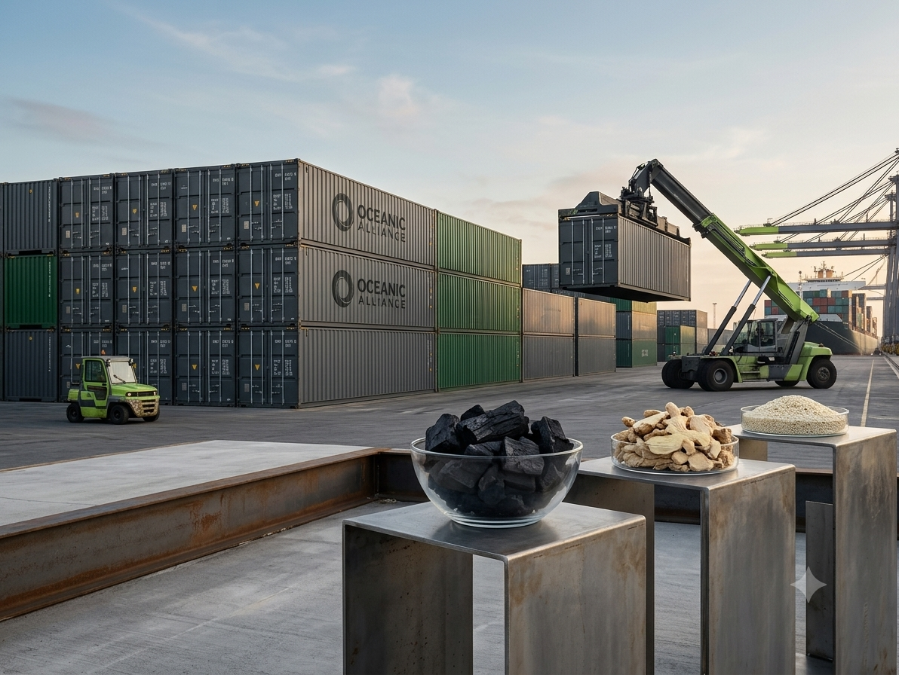

Secured global trade pipelines for premium Hardwood Charcoal, Dried Split Ginger, and Natural Sesame Seeds. Origin-direct sourcing, verified by SGS, and shipped with absolute cargo integrity.
Prime Urban Buka is an elite international agricultural commodity exporter based in Lagos, Nigeria. We specialize in securing and delivering bulk volumes of premium Hardwood Charcoal, Dried Split Ginger, Natural Sesame Seeds, and Dehydrated Garlic to procurement teams on four continents — with full SGS verification, transparent logistics, and absolute cargo integrity.
View Our Products ↗

Each commodity is sourced from verified Nigerian origins and undergoes rigorous third-party inspection by SGS or Bureau Veritas before shipment. Below are the technical specifications for our core product lines.

Transparent, secure, and verifiable trade terms for absolute peace of mind across every shipment.
FOB Apapa/Tin Can Port, Lagos or CIF Global Destination. Flexible terms tailored to your logistics pipeline.
Final pre-shipment certificate issued by SGS or Bureau Veritas at the loading port. Every container verified.
Irrevocable Letter of Credit (L/C) at sight or 30% advance T/T with 70% payable against scanned original Shipping Documents.
Trusted by procurement leaders across 4 continents for seamless commodity supply chains.
"Moving 3 to 4 containers of Ayin hardwood charcoal every month to our Riyadh distribution centers was a logistical nightmare with other suppliers. Prime Urban Buka changed the game. Consistent moisture below 5%, non-sparking, and flawless customs clearing."
"Our processing plant has zero tolerance for mold or high moisture in imported ginger. Prime Urban Buka's split dried ginger has consistently landed at Rotterdam Port at ≤11.8% moisture with pristine pre-shipment SGS analysis reports."
"Sourcing sesame seeds from Africa used to mean dealing with inconsistent purity. Prime Urban Buka guarantees a 99% purity threshold on their natural white sesame, and their payment desk accepted our Irrevocable L/C at sight without administrative delays."
"What sets Prime Urban Buka apart is their operational transparency. They don't make promises they can't logistically back up. We receive automated booking and loading port tracking data as standard protocol."
"Moving 3 to 4 containers of Ayin hardwood charcoal every month to our Riyadh distribution centers was a logistical nightmare with other suppliers. Prime Urban Buka changed the game. Consistent moisture below 5%, non-sparking, and flawless customs clearing."
"Our processing plant has zero tolerance for mold or high moisture in imported ginger. Prime Urban Buka's split dried ginger has consistently landed at Rotterdam Port at ≤11.8% moisture with pristine pre-shipment SGS analysis reports."
"Sourcing sesame seeds from Africa used to mean dealing with inconsistent purity. Prime Urban Buka guarantees a 99% purity threshold on their natural white sesame, and their payment desk accepted our Irrevocable L/C at sight without administrative delays."
"What sets Prime Urban Buka apart is their operational transparency. They don't make promises they can't logistically back up. We receive automated booking and loading port tracking data as standard protocol."
"What sets Prime Urban Buka apart is their operational transparency. They don't make promises they can't logistically back up. We receive automated booking and loading port tracking data as standard protocol."
"Sourcing sesame seeds from Africa used to mean dealing with inconsistent purity. Prime Urban Buka guarantees a 99% purity threshold on their natural white sesame, and their payment desk accepted our Irrevocable L/C at sight without administrative delays."
"Our processing plant has zero tolerance for mold or high moisture in imported ginger. Prime Urban Buka's split dried ginger has consistently landed at Rotterdam Port at ≤11.8% moisture with pristine pre-shipment SGS analysis reports."
"Moving 3 to 4 containers of Ayin hardwood charcoal every month to our Riyadh distribution centers was a logistical nightmare with other suppliers. Prime Urban Buka changed the game. Consistent moisture below 5%, non-sparking, and flawless customs clearing."
"What sets Prime Urban Buka apart is their operational transparency. They don't make promises they can't logistically back up. We receive automated booking and loading port tracking data as standard protocol."
"Sourcing sesame seeds from Africa used to mean dealing with inconsistent purity. Prime Urban Buka guarantees a 99% purity threshold on their natural white sesame, and their payment desk accepted our Irrevocable L/C at sight without administrative delays."
"Our processing plant has zero tolerance for mold or high moisture in imported ginger. Prime Urban Buka's split dried ginger has consistently landed at Rotterdam Port at ≤11.8% moisture with pristine pre-shipment SGS analysis reports."
"Moving 3 to 4 containers of Ayin hardwood charcoal every month to our Riyadh distribution centers was a logistical nightmare with other suppliers. Prime Urban Buka changed the game. Consistent moisture below 5%, non-sparking, and flawless customs clearing."
Secure your commodity allocation today. Our trade desk responds within 24 hours.
Your submission triggers an immediate email with our Q3 Technical Data Sheets and pricing.